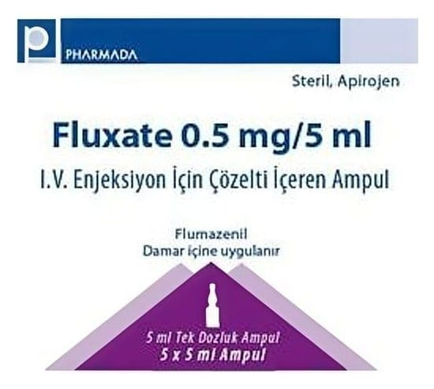

Fluxate 0.5 mg/5 ml I.V. Enjeksiyon İçin Çözelti İçeren Ampul, Ampul, 5 Adet

Ne için kullanılır
KT · Bölüm 1FLUXATE, etkin madde olarak flumazenil içeren, bir enjeksiyon veya enfüzyon çözeltisidir. Çözeltinin 1 ml’si 0.1 mg flumazenil ihtiva etmektedir. Her bir ampul, 5 ml çözelti içinde 0.5 mg flumazenil içerir. Her kutuda 0.5 mg/5 ml’lik 5 adet ampul bulunmaktadır.
FLUXATE, kuvvetli uyku başlatıcı olarak kullanılan bir ilaç grubu olan benzodiazepinlerin etkilerini geri çevirmektedir. Damara, yavaşça bir kerede veya sürekli enjeksiyon ile verilir. Etkisinin birkaç saat içinde yok olmasına ve uyku halinin yeniden görülmesine rağmen, etkisini hızlıca gösterir.
FLUXATE, benzodiazepinlerin sakinleştirici etkilerinin tamamen veya kısmen tersine çevrilmesinde kullanılır. Bu nedenle, aşağıdaki endikasyonlarda anestezi ve yoğun bakımda kullanılır:
• Anestezide: Başlangıç (endüksiyon) ve idamesinde benzodiazepinlerin kullanıldığı genel anestezinin sonlandırılması. Hem hastanede yatan, hem de ayaktan tedavi gören hastalarda, kısa tanısal ve terapötik işlemlerde kullanılan benzodiazepinlerin sakinleştirici etkilerinin tersine çevrilmesi. • Yoğun bakımda ve nedeni bilinmeyen şuur kaybına yaklaşımda: FLUXATE, benzodiazepin sarhoşluğu tanısının konmasında ya da böyle bir durumun olmadığının belirlenmesinde kullanılır. Benzodiazepinlerle olan doz aşımı durumlarında, benzodiazepinlerin merkezi etkilerinin spesifik olarak geri döndürülmesinde de kullanılabilir.